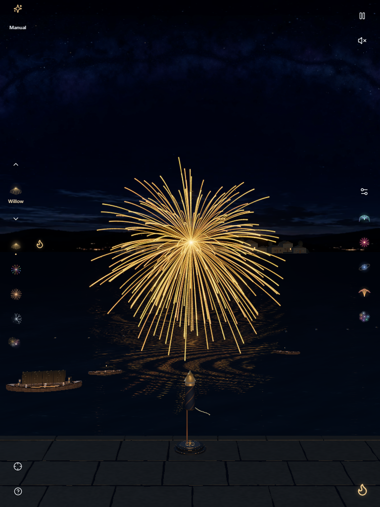
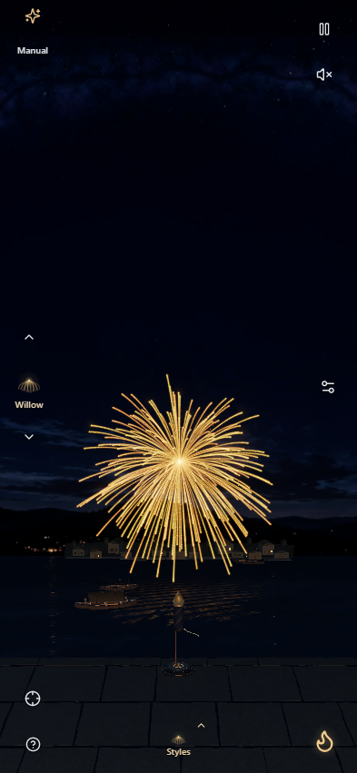
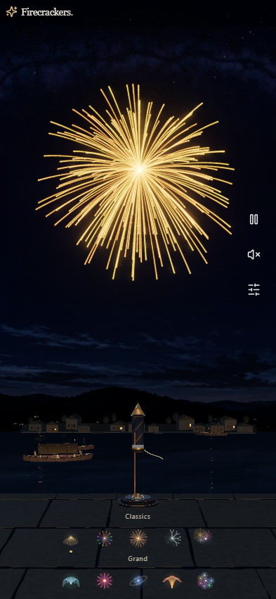
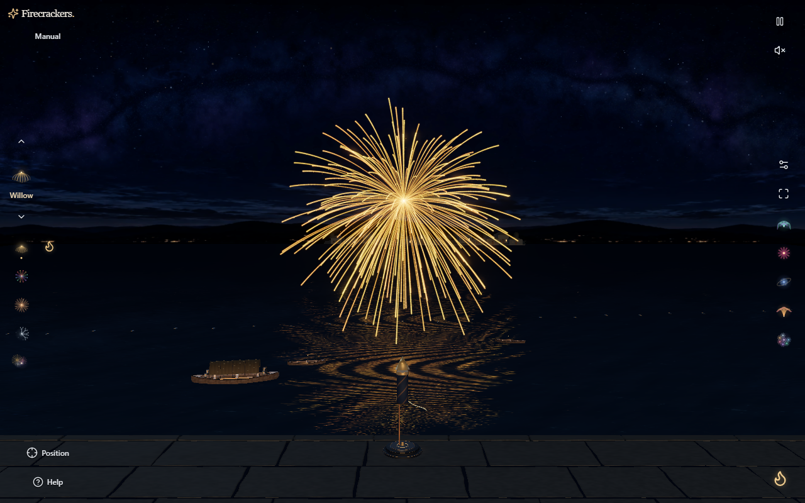

Actual installed Chrome WebGPU captures from production .7 and isolated Cloudflare .8 preview. Same seed 20260916, reset to time zero, then launch Gold Willow and advance 4.9 seconds. No generated imagery. Phone/tablet are viewport emulation, not physical devices. Complete backend/source snapshots: before and after.



